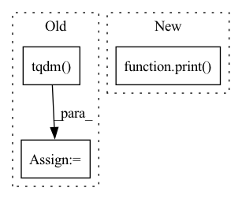

Pattern ID :34176
Before Change
iterable = range(0, n_rows, batch_size)
if verbose:
iterable = tqdm.tqdm( iterable)
for i in iterable:
row = dset[i : i + batch_size]
is_unpop = np.isnan(row).any(axis=1) // (batch_size,)After Change
is_unpop = np.isnan(row).any(axis=1) // (batch_size,)
unpop_rows.extend(list(np.where(is_unpop)[0] + i))
print( "\rFinding unpopulated rows: 100% done", end="")
return np.array(unpop_rows)
@staticmethodIn pattern: SUPERPATTERN
Frequency: 3
Non-data size: 3
Instances Fragment ID: 97597221
Project Name: bluebrain/search
Commit Name: 197099cfa2636b52afd0a77557d6f45ef5c53b36
Time: 2021-04-15
Author: francesco.casalegno@gmail.com
File Name: src/bluesearch/utils.py
M Class Name: H5
N Class Name: H5
M Method Name: find_unpopulated_rows(4)
N Method Name: find_unpopulated_rows(4)
M Parent Class:
N Parent Class:
M File Name: src/bluesearch/utils.py
N File Name: src/bluesearch/utils.py
M Start Line: 302
M End Line: 310
N Start Line: 301
N End Line: 314
Before Change
iterable = range(0, n_indices, batch_size)
if verbose:
iterable = tqdm.tqdm( iterable)
for i in iterable:
subarray = dset[sorted_indices[i : i + batch_size]] // (batch_size, dim)
final_res_l.append(subarray)After Change
final_res_l.append(subarray)
final_res = np.concatenate(final_res_l, axis=0)
print( "\rLoading H5: 100% done", end="")
return final_res[unargsort]
@staticmethod
def write(h5_path, dataset_name, data, indices): Fragment ID: 97597225
Project Name: bluebrain/search
Commit Name: 197099cfa2636b52afd0a77557d6f45ef5c53b36
Time: 2021-04-15
Author: francesco.casalegno@gmail.com
File Name: src/bluesearch/utils.py
M Class Name: H5
N Class Name: H5
M Method Name: load(5)
N Method Name: load(5)
M Parent Class:
N Parent Class:
M File Name: src/bluesearch/utils.py
N File Name: src/bluesearch/utils.py
M Start Line: 406
M End Line: 412
N Start Line: 406
N End Line: 415
Before Change
if debug: // only convert one tarball when debugging
break
progress_state["bar"] = tqdm.tqdm(desc="Process tfrecords",
total=total_records, initial=progress_state["cur"])
pool.close()
pool.join()
progress_state["bar"].close()
After Change
pool = NumberPool(processes=nworkers, offset=1)
temp_dir = tempfile.mkdtemp()
total_records = 0
print( "Extracting tfrecords from tarballs to %s..." % temp_dir)
try:
for tar_name in tqdm(os.listdir(input_path), desc="Extract tfrecords", position=0, unit="tars", leave=False):
if os.path.splitext(tar_name)[1] != ".tar": Fragment ID: 97597228
Project Name: cmpute/d3d
Commit Name: 7ade078b290087fb174bbe56a8adf65eaf433f22
Time: 2020-05-08
Author: cmpute@qq.com
File Name: d3d/dataset/waymo/converter.py
M Class Name: AnonimousClass
N Class Name: AnonimousClass
M Method Name: convert_dataset_inpath(4)
N Method Name: convert_dataset_inpath(4)
M Parent Class:
N Parent Class:
M File Name: d3d/dataset/waymo/converter.py
N File Name: d3d/dataset/waymo/converter.py
M Start Line: 260
M End Line: 301
N Start Line: 268
N End Line: 286